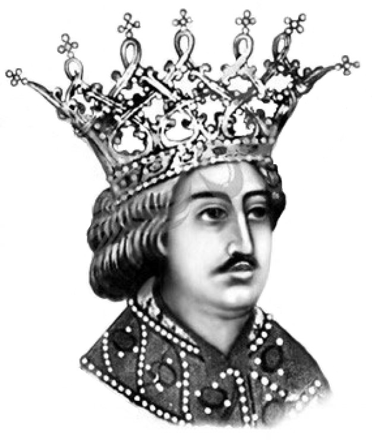

Petru Rareș
Petru Rareș (n.1483 – d. 3 septembrie 1546, Suceava) a fost domn al Moldovei de două ori, prima dată între 20 ianuarie 1527 și 18 septembrie 1538, iar a doua oară între 19 februarie 1541 și 3 septembrie 1546. A fost fiul natural al lui Ștefan cel Mare cu o anume Răreșoaia, a cărei existență nu e documentată istoric. A urmat în linii mari politica internă și externă stabilită de tatăl său, având și o parte din calitățile acestuia - ambiția, îndrăzneala, vitejia, religiozitatea, gustul artistic - dar, fire mai aventuroasă, a făcut și erori, mai ales în politica externă.
Origini
Sursele principale care descriu originea lui Petru Rareș sunt Letopisețul lui Grigore Ureche, O samă de cuvinte a lui Ion Neculce și Descrierea Moldovei a lui Dimitrie Cantemir; în toate acestea se afirmă că era un fiu natural al lui Ștefan cel Mare cu o anume „Răreșoaia” și că în tinerețe se ocupa cu „măjeritul” (comerțul cu pește). Există și ipoteza că ar fi făcut parte din familia Cernat, boieri din Țara de Jos, proprietari ai întinsei moșii ce cuprindea lacul Brateș de lângă Galați, din care ulterior Petru Rareș va face danii de pescării unor mănăstiri.O altă ipoteză o consideră pe Maria, mama lui Petru Rareș, ca făcând parte din neamul lui Isaia logofătul de la Baia, din vremea lui Alexandru cel Bun, strămoșul fraților Toader și Petru, care ar putea fi chiar Petru Rareș și fratele său dinspre mamă, Toader, iar soțul Mariei ar fi fost urmașul unui boier Bârlă de la Hârlău, cu a cărui familie se înrudea și mitropolitul Grigorie Roșca. Prin ctitoriile sale de la Baia, Hârlău și Voronețul legat de familia Bârlă, Petru Rareș s-a vădit și el legat de aceste locuri ale eventualei sale familii dinspre mamă.Cert este că ambele ipoteze, care de fapt, nu sunt antagonice, conduc la părerea că mama lui Petru Rareș aparținea unui neam de boieri și nu era doar o simplă nevastă de târgoveț, așa cum se afirmă în legendele mai vechi.
Viața lui Petru Rareș înainte de domnie este destul de puțin cunoscută. Ion Neculce consemnează că Petru a fost în tinerețe negustor de pește în zona Galațiului, pe care îl transporta cu măji (maje), niște care mari, trase de patru sau șase boi. De aici și porecla de Petru Măjerul (Măjariul).
Prima domnie
Petru Rareș a ajuns pe tronul Moldovei cu ajutorul micii boierimi, al târgoveților și al răzeșilor (țăranii liberi), dar și prin voința predecesorului său Ștefăniță Vodă, care, așa cum scria cronicarul Grigore Ureche: „aflându-se bolnav la Hotin au lăsat cuvântul, că dacă va săvârși el, să nu puie pre altul la domnie, ci pre Pătru Măjariul, ce l-au poreclit Rareș”. Fapt este că în ianuarie 1527, „boierii și țara”, după detalierea lui Grigore Ureche, în care rolul eligibil efectiv îl aveau dregătorii din sfatul domnesc, ținând seama de dorința domnului defunct și luând în considerare dovezile care arătau că „ieste de osul lui Ștefan vodă”, l-au ales domn al Moldovei pe Petru Rareș. A urmat „ridicarea” sa ca domn, adică ungerea (miruirea) și încoronarea sa, ceremonia având loc la 20 ianuarie 1527, în cetatea de scaun a Sucevei.
Pe plan intern, la începutul domniei Petru Rareș a avut o atitudine conciliantă față de boierii pribegi din motive politice, permițând revenirea unora dintre aceștia în țară. Pe plan extern, în primii ani a întreținut relații bune atât cu Regatul Poloniei, cu care a încheiat în 1527 un tratat de alianță ce prevedea sprijin reciproc în cazul unui atac turcesc, precum și o convenție comercială, cât și cu Regatul Ungariei, păstrând astfel domeniile din Transilvania pe care le deținuse și Ștefan cel Mare. De asemenea, a stabilit raporturi de prietenie și cu Țara Românească, căsătorindu-și una dintre fiice, Ana, cu voievodul Vlad Înecatul.
Între timp, în Transilvania se petreceau evenimente importante care nu puteau să-l lase indiferent pe voievodul Moldovei. După dezastrul suferit în Bătălia de la Mohács, coroana regatului Ungariei (partea ce mai rămăsese necucerită încă de Imperiul Otoman) era disputată de Ioan Zápolya, voievodul Transilvaniei, supus turcilor, și de Ferdinand de Habsburg, fratele împăratului Carol Quintul. Petru Rareș socoti că ar fi momentul potrivit pentru a interveni în Transilvania sfâșiată de luptele dintre cei doi pretendenți la tron, pentru a-și consolida stăpânirea domeniilor moștenite de la Ștefan cel Mare (Cetatea Ciceu și Cetatea de Baltă) și chiar a extinde aceste posesiuni.În vara anului 1529, el pătrunde cu oștile sale în Ardeal și asediază cetatea Bistrița (aceasta și celelalte cetăți săsești, îndeosebi Sibiul și Brașovul, trecuseră de partea lui Ferdinand). La 21 octombrie 1529 Petru Rareș obține o strălucită victorie, la Feldioara, asupra oștii lui Ferdinand de Habsburg, capturând printre altele și 50 de tunuri mari „de spijă” (fontă).După aceasta, le impune brașovenilor o contribuție de război de 4.000 de florini (sumă foarte mare pentru acea epocă) și supune definitiv și cetatea Bistrița. Ioan Zápolya și-a dat seama că această campanie a lui Petru Rareș în Ardeal urmărea extinderea posesiunilor acestuia și nu sprijinul pe care credea că îl obținuse de la voievodul moldovean pentru a ocupa tronul Ungariei. În consecință, îl somează pe Rareș să părăsească Transilvania, amenințându-l cu represalii din partea aliaților săi, turcii. Petru Rareș a fost nevoit astfel să se retragă din Ardeal, dar cu o pradă de război consistentă
Nemulțumit de faptul că Polonia nu dorea să se situeze pe o poziție antiotomană și dornic de a întări poziția Moldovei în zona est-europeană, Petru Rareș a ocupat Pocuția la sfârșitul anului 1530. Problema Pocuției (ținut cu o întindere de circa 8.000 km2, situat la nord de Moldova și populat de ucraineni dar și de moldoveni) apăruse încă de la sfârșitul secolului al XIV-lea, când voievodul Petru Mușat (1375-1391) îl împrumutase pe regele Vladislav al II-lea Iagello al Poloniei cu 3.000 ruble de argint (o sumă foarte mare pentru acea perioadă, echivalând pe atunci cu 52 kg de aur sau 538 kg de argint fin), regele polon punând ca zălog cetatea Halici și întreaga Pocuție. Ținutul Pocuției a fost disputat ulterior între cele două state, deoarece suma împrumutată de coroana poloneză nu a fost niciodată returnată în întregime. Deși inițial Petru Rareș a obținut câteva victorii și ocupase aproape în întregime Pocuția, în final a fost învins în Bătălia de la Obertin (22 august 1531) de către oastea poloneză condusă de hatmanul Jan Tarnowski, "în care tactica desăvârșită a lui Tarnowski, care își rânduise el oastea, meșteșugul tunarilor săi, biruiră pe Rareș, care-și pierdu și tunurile de la Feldioara și fugi, purtând trei răni pe trup, spre Moldova"
Prin politica sa independentă, Petru Rareș își atrase însă mânia turcilor, la acea dată în plină expansiune spre centrul Europei. Trei fapte au cântărit mult în hotărârea sultanului Soliman I Magnificul (1520-1566) de a-l detrona pe voievodul moldovean: plângerile regelui Sigismund I al Poloniei referitoare la conflictul din Pocuția (plângeri însoțite și de amenințarea voalată de invadare a Moldovei, lucru pe care turcii voiau să-l evite cu orice preț), rolul jucat de Petru Rareș în prinderea și executarea în Transilvania a lui Aloisio Gritti (trimisul special al sultanului și favorit al marelui vizir Ibrahim Pașa) și pârile unor boieri moldoveni nemulțumiți de Petru Vodă.Turcii îl trimiseseră în Transilvania pe un aventurier italian, Aloisio Gritti, să facă ordine. Voievodul transilvănean Ștefan Mailat și nobilii țării l-au silit să se închidă în Mediaș. Petru Rareș, primind poruncă de la sultan să-l elibereze, l-a trimis pe vornicul Huru. Acesta, în loc să-l ajute, l-a ispitit pe Gritti să iasă din cetate și l-a dat pe mâna dușmanilor. Aceștia l-au ucis pe loc, iar fiilor săi, duși în Moldova, Rareș le-a pregătit aceeași soartă. Turcii nu se puteau răzbuna acum, fiind ocupați în Persia, și astfel Petru putea să-și continue intrigile între Ferdinand și Zápolya. Polonezii au încercat zadarnic să-l înlocuiască în 1538 și au cerut sultanului să îl pedepsească
Petru Rareș a trecut prin grele încercări până când a reușit să ajungă în siguranță la Ciceu. Într-un hrisov datat în 1546, din timpul celei de-a doua domnii, el spunea: „Atunci am văzut că nu voi putea să le stau împotrivă [oștilor sultanului Soliman] și, lăsând oștile mele, am fugit și am ajuns la Mănăstirea Bistrița sfintelor icoane și mult am plâns, la fel și egumenul și tot soborul plângea împreună cu mine, cu fierbinți lacrimi, și am dat făgăduință... că de mă voi întoarce iarăși la scaunul meu cu bine și biruitor, atunci din temelie voi înnoi sfânta mănăstire..., iar părinții încă au înmulțit ruga către Dumnezeu dând laude, făcând denie pentru mine și dându-le sărutare am zis: părinți sfinți, rugați pe Dumnezeu și mă iertați. Și m-am despărțit de dânșii și m-am dus prin locuri pustii și... biruind am luat iarăși scaunul meu și mi-am adus aminte de făgăduiala mea”.Scăpând ca prin minune de urmăritorii săi, care încercuiseră mănăstirea, a rătăcit șase zile prin munți flămând și trudit. Ajungând în locuri neprielnice, a lăsat calul, dar a întâlnit niște pescari secui, de care s-a temut la început. Aceștia însă l-au scos în pace în Ardeal, Petru ajungând astfel în Cetatea Ciceului.
La 17 septembrie 1538, sultanul a intrat în Suceava, unde a pus mâna pe tezaurul lui Petru, care includea, între altele, și spada lui Ștefan cel Mare. Soliman Magnificul a ocupat apoi întreaga Moldovă și l-a numit ca domn pe Ștefan Lăcustă, sporind considerabil dependența țării față de Înalta Poartă: pentru prima dată în istoria Moldovei domnul era impus printr-o decizie unilaterală a sultanului, iar condițiile păcii nu erau incluse într-un tratat, ca până atunci, ci într-un act al sultanului (berat), act care marca supunerea efectivă a Moldovei față de Imperiul Otoman. Actul respectiv mai prevedea dublarea tributului (care ajungea la 30.000 de galbeni) și cedarea unui ținut de pe malul drept al Nistrului (Tighina, împreună cu 18 sate din jurul acesteia), unde turcii au înființat raiaua Bender (existentă până în secolul al XIX-lea, cu un rol important în menținerea controlului turcesc în această zonă).O inscripție turcească, cu litere arabice, de la Tighina (Bender) amintește înfrângerea Domnitorului Moldovei, despre care se spune că "a fost călcat în picioarele cailor împărătești."(N. Iorga).
În pribegie
Cu puțini însoțitori, domnul s-a îndreptat spre Piatra lui Crăciun, unde, potrivit tradiției înregistrate de Ion Neculce, a fost gonit de pietreni, fiind nevoit să tragă cu arcul într-un popă care-l ajunsese. Petru s-a îndreptat apoi spre Mănăstirea Bistrița, dar și de acolo a fost nevoit să se refugieze. La 18 septembrie plecă peste Carpați, intrând la 28 septembrie în Cetatea Ciceului, unde îl aștepta doamna sa, Elena-Ecaterina Brancovici, cu copiii Iliaș, Ștefan și Ruxandra.
Șederea lui Petru Rareș la Ciceu nu a fost în realitate cea a unui biet pribeag, ci a unui adevărat voievod. Petru Rareș avea dreptul de justiție și de deplasare liberă în Ardeal (surse documentare confirmă că la 25 ianuarie 1539 se afla la Turda) iar cetatea Bistrița îi plătea dare. Avea relații diplomatice cu regele Sigismund I al Poloniei (noiembrie 1538) și cu împăratul Carol Quintul, care la 7 noiembrie 1538 trimite la el pe arhiepiscopul de Lund, ba chiar și cu unii boieri partizani ai săi din Moldova. În cele din urmă el s-a convins că nu va putea redobândi domnia Moldovei cu ajutorul lui Ioan Zapolya, Ferdinand I de Habsburg sau Sigismund I, pentru că sultanul Soliman Magnificul controla cu autoritate situația din Moldova. „Ștefan Lăcustă nu reprezintă nimic. Sultanul stăpânește Moldova", se spunea la Viena în februarie 1539. La începutul anului 1540, Petru Rareș a plecat din Ciceu, după ce obținuse porunca (hochim) sultanului de liberă trecere la 25 ianuarie 1540 și a ajuns la Constantinopol spre sfârșitul lui februarie 1540.
Întrucât Petru considera că numai cu sprijinul sultanului își poate recăpăta domnia, i-a scris acestuia, cerându-i iertare. La începutul anului 1540, la invitația sultanului, Petru a plecat spre Constantinopol, unde, cu mari cheltuieli, a făcut demersuri pentru reînscăunarea sa în Moldova. Acțiunile sale pentru reluarea domniei au primit un sprijin neașteptat în decembrie 1540, prin asasinarea lui Ștefan Lăcustă de către boieri și înălțarea în domnie a lui Alexandru Cornea (care își zicea fiu al lui Bogdan cel Orb), fără înștințarea sultanului.
În acest context, la 9 ianuarie 1541, după primirea steagului de învestitură din partea sultanului, Petru pornește spre Moldova. Întâmpinat de boieri la Brăila, Petru îl prinde pe Alexandru Cornea la Galați, unde acesta a fost executat. Principalii trădători din 1538, boierii Mihu, Trotușanu, Crasnăș și Cozma, au fost prinși în cetatea Romanului și ulterior au fost și ei executați (la 11 martie 1541), capetele lor fiind trimise sultanului
După experiența pierderii domniei, Petru nu mai avea încrederea de a purta războaie, mai ales că nu mai avea nici legăturile de altădată cu Muntenia, căci ginerele său Vlad al VII-lea Vintilă fusese ucis. Nu a putut să recâștige nici Bugeacul, ocupat de Soliman Magnificul și nici cetățile Ciceu și Cetatea de Baltă, decât ca simple feude (în 1544), căci zidurile acestora fuseseră dărâmate de George Martinuzzi.
În 1541, din ordinul sultanului, l-a prins la Făgăraș pe voievodul Ștefan Mailat și l-a trimis la Constantinopol. În 1542 a încercat fără succes să ocupe Bistrița. Un eșec a fost și implicarea sa cu entuziasm în planul de cruciadă al principilor creștini împotriva turcilor. L-a împrumutat pe Ioachim al II-lea de Brandenburg, capul cruciadei, cu 200.000 de florini, însă inițiativa eșuează în momentul asedierii Budei, în 1542.
A doua domnie a lui Petru Rareș a fost mai liniștită decât prima, fără evenimente militare semnificative, voievodul fiind nevoit să respecte puterea otomană, aflată în acea perioadă la apogeul său. În acest timp a ctitorit mănăstirile Probota (unde se află și în prezent mormântul său) și Rașca, a refăcut mănăstirile Moldovița și Bistrița și a făcut importante donații mănăstirilor de la Muntele Athos. Voievodul, cu totul schimbat după încercările prin care trecuse în perioada 1538-1540, și dovedind multă abilitate diplomatică, a căutat să nu mai fie confruntat cu doi inamici în același timp, inaugurând o nouă politică externă: a păstrat pe față relații prietenești cu sultanul, protectorul și suzeranul său, în timp ce în secret căuta să sprijine orice acțiune antiotomană ce părea să aibă sorți de izbândă (cum a fost cea a principilor germani, sub conducerea markgrafului Ioachim al II-lea de Brandenburg, pentru eliberarea Budei, din toamna anului 1542.
Sfârșitul
Petru Rareș a murit la 3 septembrie 1546, într-o vineri, la miezul nopții (după cum relatează cronicarii).
Domnia lui Petru Rareș a reprezentat o epocă însemnată din istoria Moldovei, cu lumini și umbre, cu ambiții poate prea mari pentru fiul lui Ștefan cel Mare, care s-a dorit neatârnat față de Poarta Otomană, ceea ce nu i-a reușit întru totul, cât și față de Polonia, ceea ce i-a izbutit însă pe deplin.
|

|